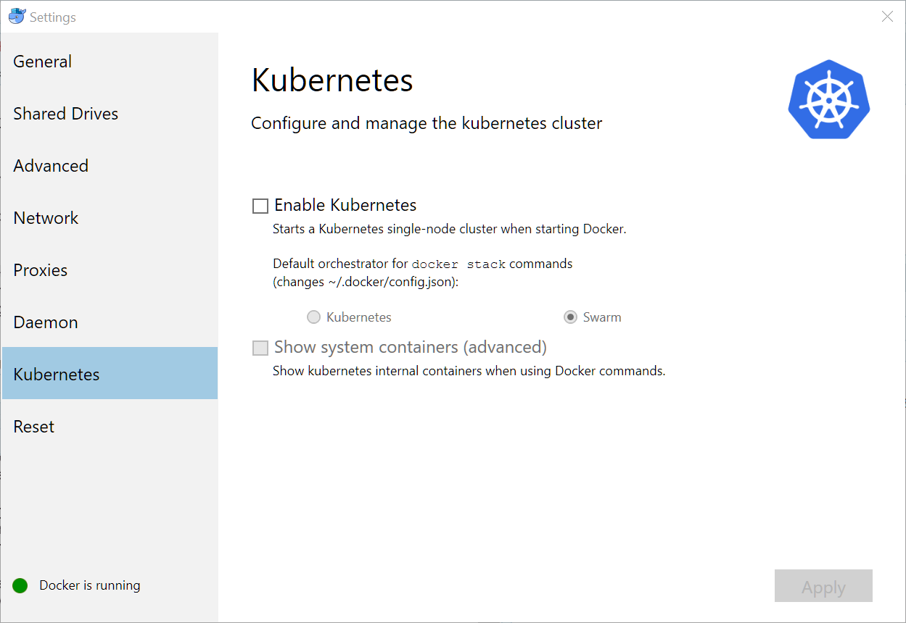

D Appendix B - Additional technical details for Windows users
This chapter explains:
- How to setup your environment for Windows
- How to use Git and GitHub effectively on Windows
Skip these instructions if your computer has either OSX or a Unix variant.
D.1 Hardware requirements
You will need an Intel or AMD processor with 64-bit hardware and the hardware virtualization feature. Most machines you buy today will have that, but older ones may not. You will need to go into the BIOS / firmware and enable the virtualization feature. You will need at least 4 gigabytes of RAM!
D.2 Software requirements
You will need Windows 7 64-bit or later. If you can afford it, I highly recommend upgrading to Windows 10 Pro.
D.2.1 Windows 7, 8, 8.1 and Windows 10 Home (64 bit)
Install Docker Toolbox. The instructions are here: https://docs.docker.com/toolbox/toolbox_install_windows/. Make sure you try the test cases and they work!
D.2.2 Windows 10 Pro
Install Docker for Windows stable. The instructions are here: https://docs.docker.com/docker-for-windows/install/#start-docker-for-windows. Again, make sure you try the test cases and they work.
D.3 Docker for Windows settings
D.3.2 Kubernetes
Kubernetes is a container orchestration / cloud management package that’s a major DevOps tool. It’s heavily supported by Red Hat and Google, and as a result is becoming a required skill for DevOps.
However, it’s overkill for this project at the moment. So you should make sure it’s not enabled.
Go to the Kubernetes dialog and make sure the Enable Kubernetes checkbox is cleared.

D.4 Git, GitHub and line endings
Git was originally developed for Linux - in fact, it was created by Linus Torvalds to manage hundreds of different versions of the Linux kernel on different machines all around the world. As usage has grown, Git has achieved a huge following and is the version control system used by most large open source projects, including this one.
If you’re on Windows, there are some things about Git and GitHub you need to watch. First of all, there are quite a few tools for running Git on Windows, but the RStudio default and recommended one is Git for Windows (https://git-scm.com/download/win).
By default, text files on Linux end with a single linefeed (\n) character. But on Windows, text files end with a carriage return and a line feed (\r\n). See https://en.wikipedia.org/wiki/Newline for the gory details.
Git defaults to checking files out in the native mode. So if you’re on Linux, a text file will show up with the Linux convention, and if you’re on Windows, it will show up with the Windows convention.
Most of the time this doesn’t cause any problems. But Docker containers usually run Linux, and if you have files from a repository on Windows that you’ve sent to the container, the container may malfunction or give weird results. This kind of situation has caused a lot of grief for contributors to this project, so beware.
In particular, executable sh or bash scripts will fail in a Docker container if they have Windows line endings. You may see an error message with \r in it, which means the shell saw the carriage return (\r) and gave up. But often you’ll see no hint at all what the problem was.
So you need a way to tell Git that some files need to be checked out with Linux line endings. See https://help.github.com/articles/dealing-with-line-endings/ for the details. Summary:
- You’ll need a
.gitattributesfile in the root of the repository. - In that file, all text files (scripts, program source, data, etc.) that are destined for a Docker container will need to have the designator
<spec> text eol=lf, where<spec>is the file name specifier, for example,*.sh.
This repo includes a sample: .gitattributes